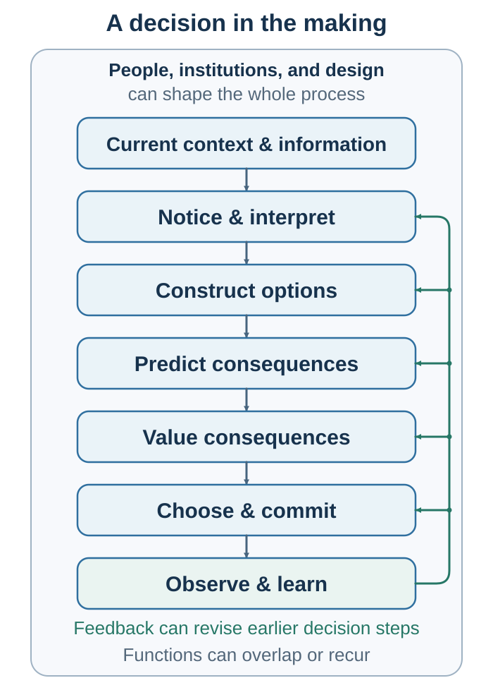

Decision in the Making
The Behavioral Science of Choice, Influence, and Agreement
Preface: A Decision Is Already in the Making

At 3:17 p.m., the chair of a hiring committee asks for a vote. Five hands rise for one candidate, two for another. The decision appears to happen at that moment.
And the committee has reasons. Its members have read the applications, conducted the interviews, compared qualifications, discussed strengths and weaknesses, and considered what the organization needs. Each person can explain why one candidate seemed stronger. The result is recorded, the offer is made, and the search is closed.
But the decision did not begin at 3:17. It began when the position was defined and certain qualities were made important while others were left unmentioned. It continued when the applications were arranged in a particular order, when the first impressive candidate became a reference point, and when one vivid interview story became easier to recall than a quieter record of consistent achievement. It shifted when a senior member expressed enthusiasm before everyone else had spoken. It narrowed when the committee used the word fit without agreeing on whether it meant competence, shared values, familiarity, personal comfort, or similarity to people already in the organization.
Some of these influences were deliberate. Others were incidental. Some reflected expertise. Others reflected habit, convenience, social pressure, or the accidental sequence in which information appeared. Some alternatives were examined carefully. Others were never constructed.
Therefore, understanding the vote requires more than examining the final choice or the reasons offered afterward. We must follow the process upstream—to what people noticed, how they interpreted it, which possibilities they imagined, what consequences they predicted, what they valued, and what they failed to see.
We must study the decision in the making.
Follow the decision upstream
The familiar term decision-making compresses an extended process into a single label. The title of this book opens that label again. The inserted words—in the—shift attention from the visible endpoint to the often invisible process through which a decision forms.
A decision is not born fully developed at the moment of choice. Information must first enter attention and acquire meaning within some model of the situation. Possible actions must be constructed rather than merely discovered. Their consequences must be anticipated. Those consequences must acquire value: attractive or threatening, fair or unfair, meaningful or pointless, acceptable or intolerable. The options must then be compared, one path selected, and the others forgone. Action changes the world, and what happens next may improve the next decision—or merely reinforce the story we already prefer.
A useful first map is:
Context and information → Notice and interpret → Construct options → Predict → Value → Choose, commit and act → Observe and learn
This sequence names functions, not a rigid series of conscious stages. Option construction, prediction, and valuation are especially intertwined. We cannot predict the consequences of an option that has not yet been imagined. Yet imagining those consequences may reveal that the option is infeasible, suggest a better version of it, or expose an alternative that was previously invisible. Valuation may send us back again: if none of the predicted outcomes is good enough, the real task is not to choose among the existing options but to construct new ones.
A decision is therefore better represented as a loop than as a straight line. What we value affects what we notice. What we expect affects how we interpret ambiguous evidence. Predictions reshape the option set. Action changes how other people respond. Their responses then become evidence for the next interpretation. Learning may revise the process, but memory and self-justification may also protect it from revision.

The word making does not imply that every decision has a single maker or a deliberate design. Formation is often distributed across people, moments, technologies, institutions, and accidents. A number encountered yesterday may become today’s anchor. A passing emotion may alter how a future is valued. An interface may make one path effortless and another almost invisible. A social norm may define what feels acceptable without anyone issuing an instruction. A confident colleague may influence a group before the evidence has been independently examined.
The choice may be intentional even when many of the forces producing it are not.
That is why a decision often looks cleaner after it has been made than it did while it was forming. Once the outcome is visible, people construct a coherent account:
I accepted the job because it offered the best prospects.
We approved the project because the forecast was strong.
I bought the product because it provided the greatest value.
We reached the agreement because the terms were fair.
These explanations may contain genuine reasons. They may also omit causes that were difficult to observe, uncomfortable to acknowledge, or no longer easy to remember. The mind is not only a decision-maker. It is also a narrator, and the narrator speaks with the advantage—and distortion—of knowing how the story ended.
A favorable outcome can make a weak process appear wise. An unfavorable outcome can make a sound decision appear foolish. Hindsight can turn uncertainty into apparent inevitability. Memory can quietly revise what we believe we knew all along. To learn well, we must therefore distinguish decision quality from outcome quality and preserve what was believed before the result became known.
Rationality remains important within this more complicated account. But it is not presented here as a realistic portrait of a flawless human mind. It is a benchmark that helps make beliefs, alternatives, values, constraints, trade-offs, and opportunity costs explicit. It can reveal whether two people disagree about what is likely to happen, about what outcomes matter, or about both. It can expose an inconsistency, a hidden sacrifice, an ignored base rate, or an option defined too narrowly.
Human judgment, however, cannot reconstruct every choice from first principles. A mind that reconsidered every possibility from the beginning would never complete an ordinary day. Intuition compresses experience. Emotion makes outcomes matter. Habits conserve effort. Stories organize information. Social learning allows knowledge to accumulate across people and generations. Norms make coordination possible. Commitments protect valued futures from passing impulses.
The problem is not that people use shortcuts. The problem arises when a cue, habit, story, model, or social signal receives more influence than the environment justifies.
A vivid example may replace a relevant base rate. Familiarity may be mistaken for truth. Confidence may be mistaken for competence. A temporary feeling may alter a long-term valuation. A group may treat repeated information as independent confirmation when everyone is drawing from the same source. A default may determine an outcome that few people consciously endorse. A compelling story may make one explanation easy to imagine while equally plausible explanations disappear from view.
From labels to causes
For this reason, the book is not primarily a catalog of biases. A label can describe a pattern without explaining how it arose. Calling a judgment anchored, a choice loss averse, a behavior habitual, or a group conformist does not yet reveal what information entered the process, what comparison was constructed, which alternatives were absent, or what intervention would improve the result.
Diagnosis requires causal questions:
- What entered attention, and what remained invisible?
- What model gave the information meaning?
- Which actions were treated as possible?
- What consequences were predicted under each option?
- What was valued, by whom, and why?
- What was the best feasible path forgone?
- What evidence would change the conclusion?
- What feedback could make the next decision better?
These questions move us from naming an effect to understanding a process. They also lead to a deeper question.
What is a good decision ultimately for?
Every consequential choice contains an implicit theory of a desirable future. We accept a job, begin a relationship, move to another city, spend money, save it, persist, quit, cooperate, or compromise because we expect one path to produce consequences we value more than another.
But the future chosen is first a prediction.
The job imagined during recruitment is not the job experienced on an ordinary Tuesday. The pleasure anticipated before a purchase may fade quickly. An event that dominates attention while we decide may occupy very little of daily life afterward. A difficult experience may feel unpleasant in the moment yet later become a source of meaning, pride, or identity. What is predicted, experienced, remembered, and evaluated as a good life need not be the same thing.
Subjective well-being therefore belongs within decision science, not at its edge. It connects the future anticipated before choice with the life experienced afterward. It asks whether people predicted their reactions accurately, what they adapted to, what continued to matter, and whether happiness was even the only value the decision was meant to serve.
A choice is not necessarily better merely because it increases income, produces a pleasant moment, satisfies an expressed preference, wins a negotiation, or changes behavior in the direction desired by a designer. A serious assessment may also need to consider health, security, relationships, autonomy, meaning, fairness, responsibility, dignity, rights, distribution, and future options.
Subjective well-being does not provide a master objective that overrides these considerations. It performs a more important function: it forces us to clarify what we mean by better and to examine the distance between the life imagined before a decision and the life that follows it.
A decision is therefore not fully understood when an option has been selected. Its consequences must still be lived, remembered, evaluated, and learned from. In this sense, the decision remains in the making after the visible moment of choice.
Nor does it remain within one mind for long.
When other minds enter
Another person’s behavior may alter the consequences of ours. Their expectations affect our expectations. Their choices change our options. Their trust, resistance, status, identity, fear, and willingness to cooperate become part of the decision itself. What begins as individual judgment expands into strategic and social life.
This book follows that expansion through three connected movements:
Choice within a mind. Influence across minds. Agreement between interdependent minds.
To choose is to construct and act upon a representation of what is possible and what matters.
To influence is to alter what other minds notice, believe, anticipate, value, or feel able to do.
To reach agreement is to construct a joint course of action between people whose choices and outcomes depend on one another.
These activities are often taught as separate subjects. Here they form one cumulative journey.
Persuasion begins with a decision already in the making. An audience is not an empty container waiting to receive information. People arrive with beliefs about causes and consequences, values they want to protect, identities they do not want threatened, and experiences that determine which evidence feels credible or relevant. Effective persuasion therefore requires more than speaking clearly or presenting additional facts. It requires understanding the model through which the audience interprets those facts and identifying what would justify an update.
Stories matter because evidence does not arrive with its own structure. A story directs attention, organizes events into causes and consequences, makes possible futures imaginable, and connects information to emotion and identity. These properties make stories powerful instruments of understanding. They also allow weak evidence to travel farther than it deserves.
A compelling account can help people understand the truth. Compellingness is not itself evidence of truth.
Communication introduces reciprocity. Words do not move intact from one mind into another. They provide evidence from which another person infers meaning, intention, emotion, and relationship. The listener does not receive exactly what the speaker meant; the listener constructs an interpretation.
Understanding must therefore be made recoverable. People ask, listen, reflect, correct, and repair. A productive conversation is not one in which misunderstanding never occurs. It is one in which misunderstanding can become visible without immediately becoming a threat.
Negotiation brings choice, influence, and communication together under direct interdependence. Each side has alternatives, interests, forecasts, priorities, emotions, relationships, and the ability to refuse. A negotiator must understand not only the proposal on the table but also the paths available away from it.
Preparation protects the ability to reject an agreement worse than one’s alternatives. Distributive analysis helps people claim value without confusing pressure with genuine power. Integrative analysis searches for differences in priorities, timing, forecasts, risk, and capabilities that can create value before it is divided. Agreement design asks whether promises can be measured, implemented, adapted, and trusted.
A signed agreement is not the end of this process. Its value depends on what people do next, how uncertainty is handled, and whether the parties can learn and adjust when circumstances change. The agreement, too, remains in the making.
The environment gets a vote
The environment participates in all these processes. A menu determines which alternatives become visible. Order establishes comparison points. A default determines what happens when no active choice is made. Friction makes some intentions easier to carry out than others. Feedback determines whether action produces learning. Incentives alter what is worth pursuing, while norms and identity alter what feels permissible to pursue.
The environment, in other words, gets a vote.
This is why the book eventually moves from explaining decisions to redesigning the conditions under which they develop. Behavior design examines cues, ability, prompts, friction, and feedback. Choice architecture examines how options are organized, described, encountered, and selected. Decision hygiene examines how individuals and organizations can preserve independent judgment, structure disagreement, distinguish evidence from advocacy, record assumptions, and prevent outcomes from rewriting the process that produced them.
Yet the aim is not to eliminate every influence on choice. That would be neither possible nor desirable. The aim is to make consequential influences more visible, testable, proportionate, and open to correction.
That practical ambition creates an ethical responsibility.
Evidence, ethics, and responsibility
The same knowledge that can improve a decision can also be used to exploit it. Attention can be directed toward relevant evidence or harvested for engagement. A default can help people implement considered goals or conceal the designer’s preferred outcome. Social information can reduce uncertainty or manufacture conformity. Identity can support agency or threaten belonging. A story can clarify consequences or bypass scrutiny. A negotiation tactic can protect a legitimate interest or exploit confusion.
Throughout the book, one ethical question recurs:
Would this message, environment, conversation, agreement, or decision system remain defensible if the people affected understood how it worked, whose objective it served, what evidence supported it, and how they could refuse, correct, or revise it?
Transparency does not resolve every ethical conflict. People may disagree about welfare, fairness, authority, and acceptable risk. But a method that depends on concealment, manufactured urgency, deliberate confusion, or the inability to exit deserves particular suspicion.
The same caution applies to the science itself. Behavioral science contains robust findings, useful approximations, contested interpretations, context-dependent effects, and memorable claims that became more confident as they became more famous. A laboratory demonstration does not automatically establish a large effect in everyday life. A neural correlate does not by itself reveal a motive. An average difference between groups does not diagnose an individual. A successful study is not the same as a mature body of evidence, and a failed replication of one procedure does not settle every version of the underlying question.
This book therefore treats evidence with boundaries. Models are tools rather than complete portraits of reality. Fast thinking is not assumed to be foolish, and slow thinking is not assumed to be immune to error. Emotion is not treated as the enemy of reason. Culture provides hypotheses about learned meaning, not instructions for stereotyping a person. Stories can make evidence understandable, but they cannot make weak evidence true.
Scientific uncertainty is not a reason for cynicism. It is a reason to match confidence to evidence.
Notice. Test. Ask. Design. Learn.
This book grew from teaching behavioral economics and decision, persuasion, and negotiation to students who wanted both scientific discipline and usable tools. They wanted to understand why an intelligent person could make a poor decision, why a sensible recommendation could fail to persuade, why a well-intended conversation could create distance, and why two parties could leave value undiscovered even when agreement was possible.
More importantly, they wanted to know what to do next.
The chapters therefore ask readers to participate. You may be invited to make a prediction before seeing the evidence, experience the pull of an intuitive answer, analyze a case, reconstruct a mechanism, compare competing explanations, or redesign a process. The recurring movement is:
Experience → Explain → Test → Apply
The goal is not merely to remember the name of an effect. It is to carry a useful distinction, question, forecast, conversation, or design into a new situation.
Better decision-making does not mean producing a perfectly rational person. It means creating conditions in which assumptions can be examined, alternatives can be expanded, predictions can be tested, values can be discussed, disagreement can become informative, and mistakes can produce learning rather than defensiveness.
The practical spirit of the book can be compressed into five verbs:
Notice. Test. Ask. Design. Learn.
Notice what has entered attention and what has not. Test the current model against base rates, competing explanations, and disconfirming evidence. Ask other people about their meanings, interests, constraints, and perspectives rather than relying on confident mind-reading. Design the environment, message, conversation, or agreement so that better action becomes more feasible. Learn from records created before the outcome was known.
None of this guarantees the correct answer. Evidence remains incomplete. Values conflict. Other people retain their own agency. Luck continues to matter.
But a decision need not become certain to become more thoughtful. It need not become perfect to become more inspectable, more defensible, and more capable of correction.
The most useful moment is often not after a decision has been made, when the outcome is visible and explanation comes easily. It is earlier—while attention can still be redirected, assumptions can still be tested, alternatives can still be constructed, predictions can still be challenged, values can still be clarified, and the path can still change.
We usually think a decision begins when we consciously start choosing. But by then, the process may already be underway.
The decision is already in the making.